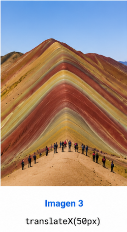
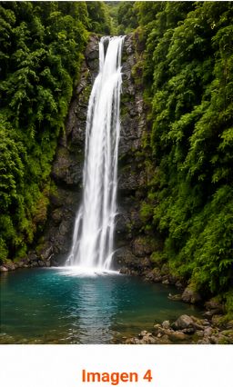

Cusco
Capital histórica
Diseño con Flexbox y efecto hover con escala, sombra y cambio suave de fondo.
Capital histórica
Ciudad Blanca
Capital amazónica
Cada imagen inicia con una transformación distinta y cambia suavemente al pasar el cursor.


Verificar compatibilidad evita que animaciones y estilos se rompan en navegadores antiguos o con soporte incompleto.
La compatibilidad entre navegadores garantiza que el sitio se vea y funcione de manera consistente en diferentes motores de renderizado. Esto mejora la experiencia del usuario, reduce errores visuales y asegura que animaciones, transformaciones y transiciones se mantengan correctas antes del despliegue.
b) Animación con prefijos para navegadores antiguos.
.compat-box {
-webkit-animation: orbit 2.5s infinite linear;
-moz-animation: orbit 2.5s infinite linear;
-o-animation: orbit 2.5s infinite linear;
animation: orbit 2.5s infinite linear;
}